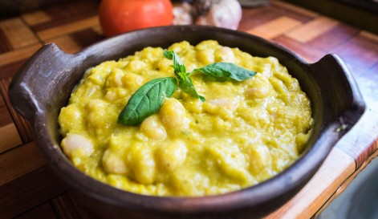
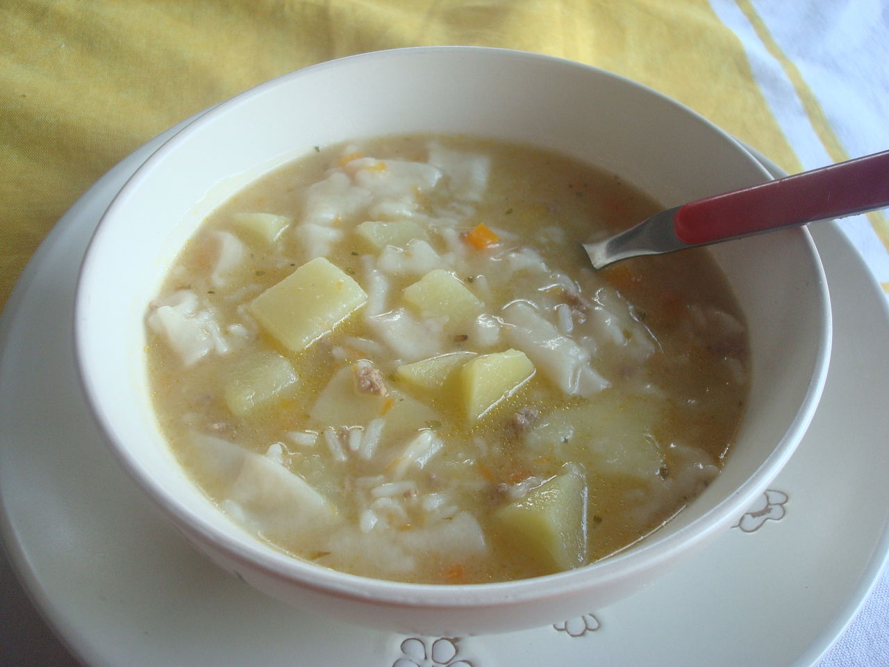

Porotos con Mazamorra
Los porotos granados son un plato típico de la cocina campesina chilena, el cual consiste en porotos cocidos con mazamorra o alternativamente pilco (granos de maíz), cebolla, zapallo, y ajo. Suele ser acompañado con ensalada a la chilena y pebre.
Al ser un plato caliente y contundente es preferible prepararlo en invierno, aunque se consume de preferencia en verano, ya que tanto los "porotos granados" como el maíz dulce o choclero con el que se prepara se da al final de la primavera en el hemisferio sur.
Dafne: Es un plato exquisito que se sirve principalmente al Sur de Chile.
Diego: ¿Me pueden enviar la receta de este plato?
Diego: Gracias!, ya lo prepare y me quedo muy rico.
Pantrucas
La pantruca, pancutra o pancucha es un alimento típico de Chile y de la región patagónica de Argentina, preparado a base de harina de trigo. En sí, esta preparación es una masa elaborada con agua, harina y un poco de aceite, que se amasa como si se tratase de cualquier pasta y se corta en cortes irregulares para luego cocinar en caldo de verduras o de carne y se sirve junto con éste.
Diego:¿Me pueden enviar la receta de este plato?.